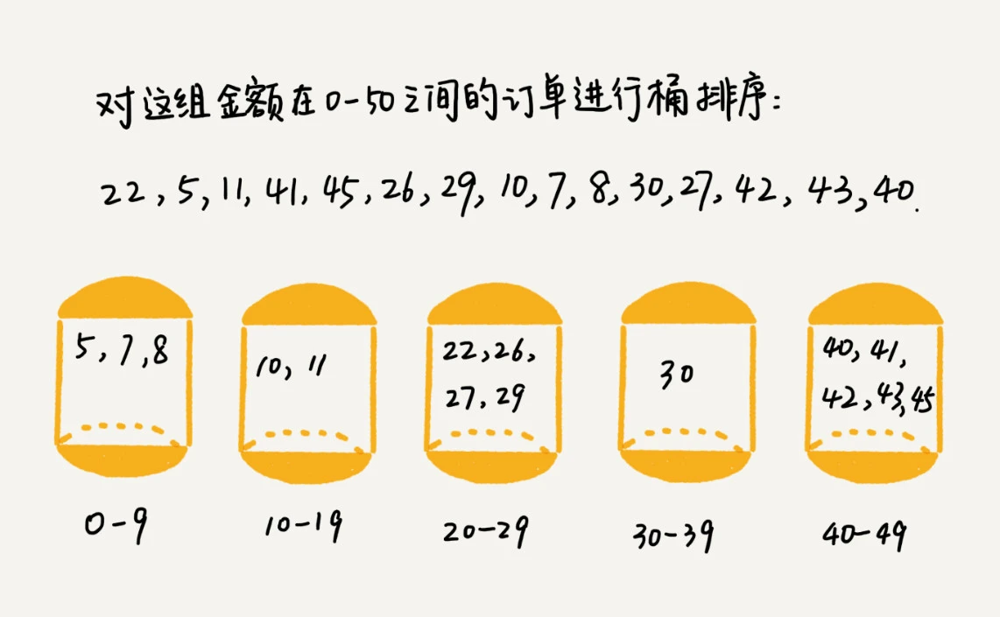

今天来学习三种时间复杂度是O(n)的排序算法：桶排序、计数排序、基数排序。
因为这些排序算法的时间复杂度是线性的，所以把这类排序算法叫做线性排序。之所以能做到线性的时间复杂度，主要原因是，这三个算法是非基于比较的排序算法，都不涉及元素之间的比较操作。
学习重点是掌握这些排序算法的适用场景。
桶排序
核心思想
将要排序的数据分到几个有序的桶里，每个桶里的数据再单独进行排序。桶内排完序之后，再把每个桶里的数据按照顺序依次取出，组成的序列就是有序的了。

时间复杂度
如果要排序的数据有n个，把它均匀地划分到m个桶内，每个桶里就有k=n/m个元素。每个桶内部使用快速排序，时间复杂度为O(k*logk)。m个桶排序的时间复杂度就是O(m*k*logk)，因为k=n/m，所以整个桶排序的时间复杂度就是O(n*log(n/m))。当桶的个数m接近数据个数n时，log(n/m)就是一个非常小的常量，这个时候桶排序的时间复杂度接近O(n)。
空间复杂度
空间复杂度为O(n+m)。
稳定性
如果每次桶内使用快速排序，则桶排序是不稳定的。而每次桶内使用归并排序，则桶排序是稳定的排序算法。
前提条件
首先，要排序的数据需要很容易就能划分成m个桶，并且，桶与桶之间有着天然的大小顺序。这样每个桶内的数据都排序完之后，桶与桶之间的数据不需要再进行排序。
其次，数据在各个桶之间的分布是比较均匀的。
适用场景
桶排序比较适合用在外部排序中。所谓的外部排序就是数据存储在外部磁盘中，数据量比较大，内存有限，无法将数据全部加载到内存中。
比如有10GB的订单数据，希望按订单金额（假设金额都是正整数）进行排序，但是内存有限，只有几百MB，没办法一次性把10GB的数据都加载到内存中，这时候该怎么办？
先扫描一遍文件，看订单金额所处的数据范围。假设经过扫描之后我们得到，订单金额最小是1元，最大是10万元。我们将所有订单根据金额划分到100个桶里，第一个桶我们存储金额在1元到1000元之间的订单，第二桶存储金额在1001元到2000元之内的订单，以此类推。每个桶对应一个文件，并且按照金额范围的大小顺序编号命名（00，01，02...99）。
理想的情况下，如果订单金额在1到10万之间均匀分布，那订单会被均匀划分到100个文件中，每个小文件中存储大约100MB的订单数据，就可以将这100个小文件依次放到内存中，用快排来排序。等所有文件都排好序之后，只需要按照文件编号，从小到大依次读取每个小文件中的订单数据，并将其写入到一个文件中，那这个文件中存储的就是按照金额从小到大排序的订单数据了。
这里有一个问题，桶的实现方式是文件。还有就是需要注意的是，时间复杂度为O(n)，并不意味着只遍历一次，也可能是两次三次，这里遍历次数很小，系数可以忽略。O(n)指的是程序执行时间随数据规模呈线性关系。
不过，订单按照金额在1元到10万元之间并不一定是均匀分布的，所以10GB订单数据是无法均匀地被划分到100个文件中的。有可能某个金额区间的数据特别多，划分之后对应的文件会很大，没法一次性读入内存。
针对这些划分之后还是比较大的文件，可以继续划分，比如，订单金额在1元到1000元之间的比较多，就将这个区间继续划分为10个小区间，1元到100元，101元到200元...901元到1000元。如果划分之后，101元到200元之间的订单还是太多，无法一次性读入内存，那就继续再划分，直到所有的文件都能读入内存为止。
计数排序
计数排序其实是桶排序的一种特殊情况。当要排序的n个数据，所处的范围并不大的时候，比如最大值是k，就可以把数据划分成k个桶，每个桶内的数据值都是相同的，省掉了桶内排序的时间。计数排序的算法思想跟桶排序非常类似，只是桶的大小粒度不一样。桶排序的粒度是多个，而计数排序的粒度是一个。
适用场景
如果所在的省有50万考生，如果通过成绩快速排序得出名次呢？
考生的满分是900分，最小是0分，这个数据的范围很小，所以可以分成901个桶，对应分数从0分到900分。根据考生的成绩，将这50万考生划分到这901个桶里。桶内的数据都是分数相同的考生，所以并不需要再进行排序。只需要依次扫描每个桶，将桶内的考生依次输出到一个数组中，就实现了50万考生的排序。因为只涉及扫描遍历操作，时间复杂度为O(n)。
和桶排序不同的是，计数排序中桶存的不是元素而是元素的数量。
总结
计数排序只能用在数据范围不大的场景中，如果数据范围k比要排序的数据n大很多，就不适合用计数排序了。而且，计数排序只能给非负整数排序，如果要排序的数据是其他类型的，要将其在不改变相对大小的情况下，转化为非负整数。
比如，还是拿考生这个例子。如果考生成绩精确到小数后一位，就需要将所有的分数都先乘以10，转化成整数，然后再放到9010个桶内。再比如，如果要排序的数据中有负数，数据的范围是[-1000, 1000]，那我们就需要先对每个数据都加1000，转化成非负整数。
基数排序
适用场景
假设有10w个手机号码，希望将这10万个手机号码从小到大排序，有什么比较快速的排序方法？
先按照最后一位来排序手机号码，然后，再按照倒数第二位重新排序，以此类推，最后按照第一位重新排序。经过11次排序之后，手机号码就都有序了。这里按照每位来排序的排序算法必须是稳定的，否则最后一次排序只会考虑最高位的大小顺序，完全不管其他位的大小关系，低位的排序就完全没有意义了。
根据每一位来排序，可以用桶排序或者计数排序，时间复杂度可以做到O(n)。如果要排序的数据有k位，那么就需要k次桶排序或者计数排序，总的时间复杂度是O(k*n)。当k不大的时候，比如手机号码排序的例子，k最大就是11，所以基数排序的时间复杂度近似于O(n)。
当排序的数据不是等长的的时候，可以把所有的单词补齐到相同长度，位数不够的可以在后面补“0”，因为根据ASCII值，所有字母都大于“0”，所以补“0”不会影响到原有的大小顺序。这样就可以继续使用基数排序了。
总结
基数排序对要排序的数据是有要求的。需要可以分割出独立的“位”来比较，而且位之间有递进的关系，如果a数据的高位比b数据大，那剩下的低位就不用比较了。除此之外，每一位的数据范围不能太大，要可以用线性排序算法来排序，否则，基数排序的时间复杂度就无法做到O(n)了。
解答开篇
如何根据年龄给100w用户排序？
实际上，根据年龄给100w用户排序，就类似按照成绩给50w考生排序。我们假设年龄的范围最小1岁，最大不超过120岁（或者可以通过遍历看一下年龄范围）。遍历这100w用户，根据年龄将其划分到这120个桶里，然后依次顺序遍历这120个桶中的元素，这样就得到了按照年龄排序的100w用户数据。
那么，这种排序方式是桶排序还是计数排序呢？
课后思考
假设现在需要对D, a, F, B, c, A，z这个字符串进行排序，要求将其中所有小写的字母都排在大写字母的前面，但小写字母内部和大写字母内部不要求有序。比如经过排序之后为a, c, z, D, F, B, A，这个该如何实现呢？如果字符串中存储的不仅有大小写字母，还有数字。要将小写字母的放到前面，大写字母的放到后面，数字放在中间，不用排序算法，该怎么解决？
答案一：用两个指针a，b：a指针从头开始往后遍历，遇到大写字母就停下，b从后往前遍历，遇到小写字母就停下，交换a、b指针对应的元素；重复如上过程，直到a、b指针相交。对于小写字母放前面，数字放中间，大写字母放后面，可以先将数据分为小写字母和非小写字母两大类，进行如上交换再在非小写字母区间内分为数字和大写字母做同样处理。
答案二：利用桶排序思想，共小写、大写、数字三个桶，遍历一遍，都放进去，然后再从桶中取出来。时间复杂度为O(n)。